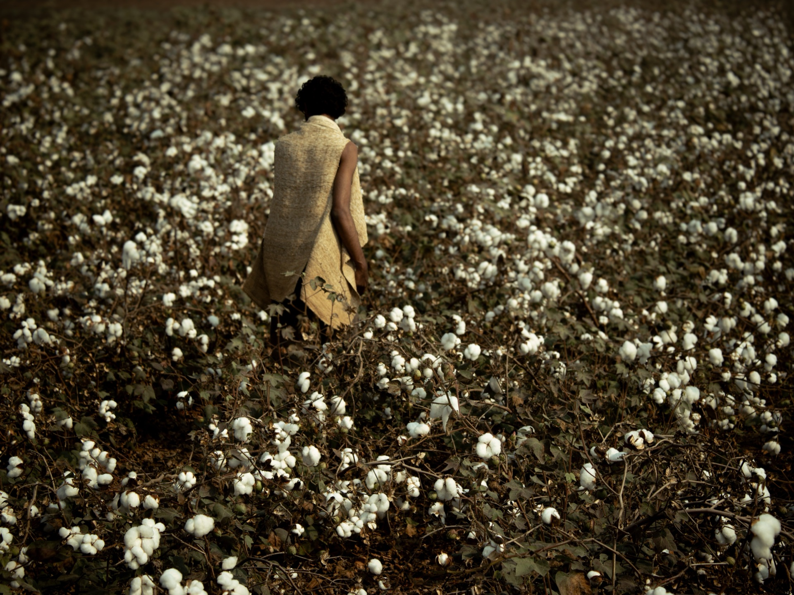
Woven
WOVEN DESIGN PROJECT
The aim of this project was to create a handwoven fabric using Tussar silk that was both aesthetically refined and technically accessible to the weavers of Chittoor — artisans from the Chittoor region of Andhra Pradesh who locally produce Tussar silk.
Samples
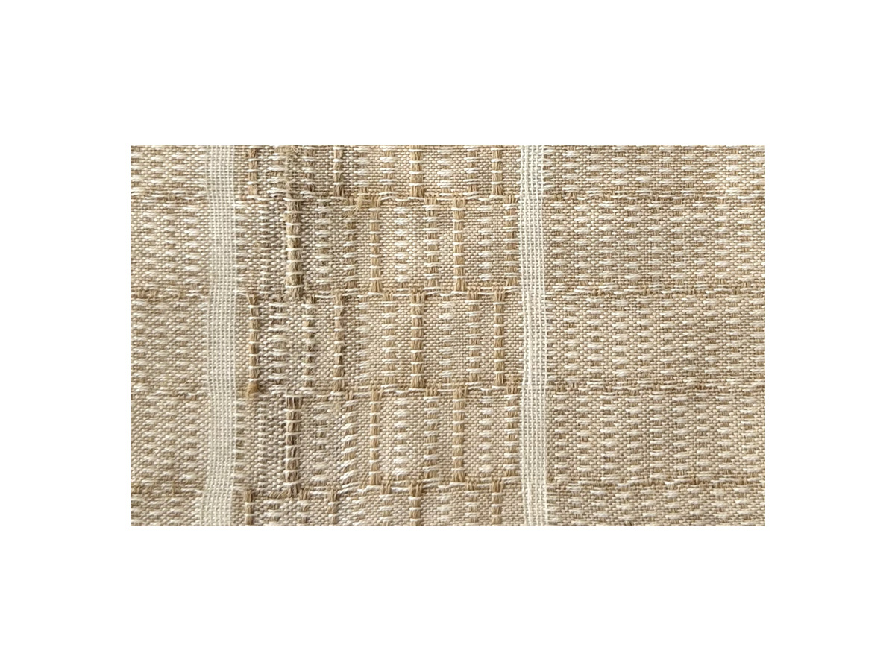
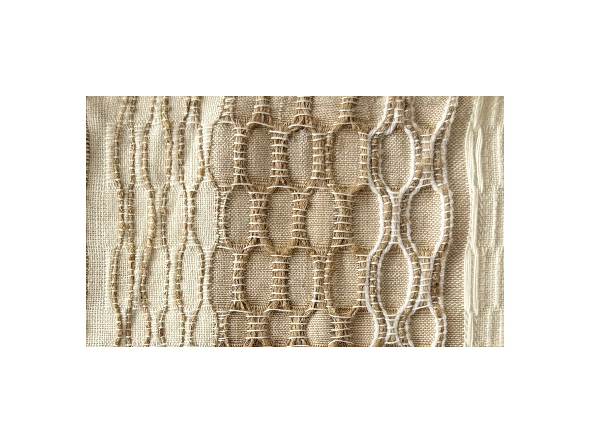
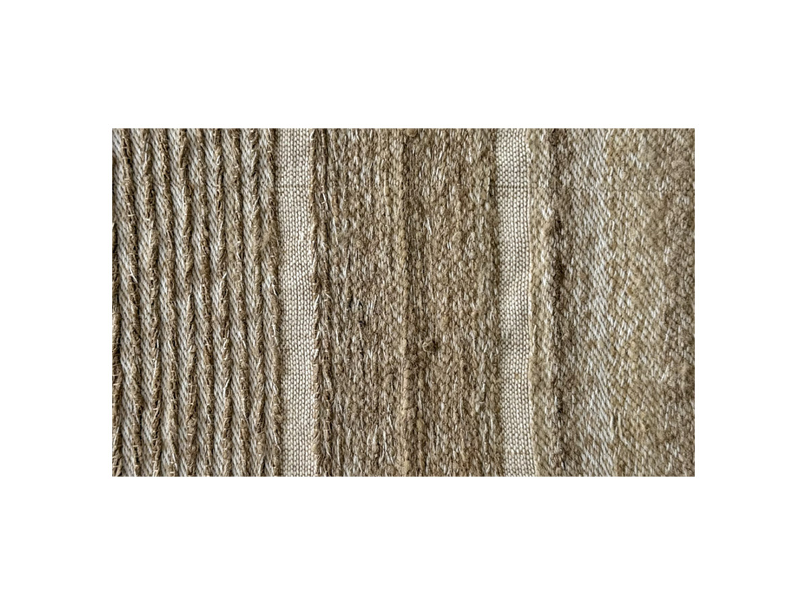
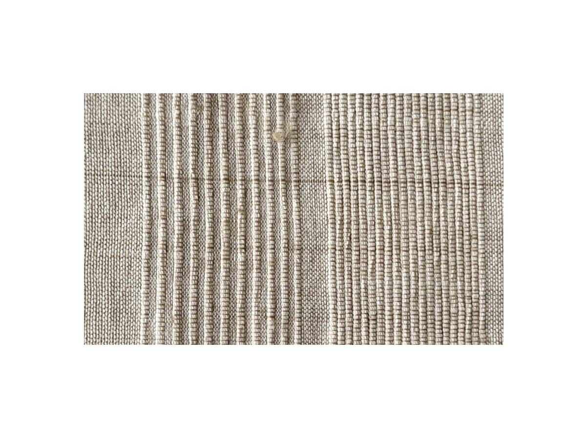
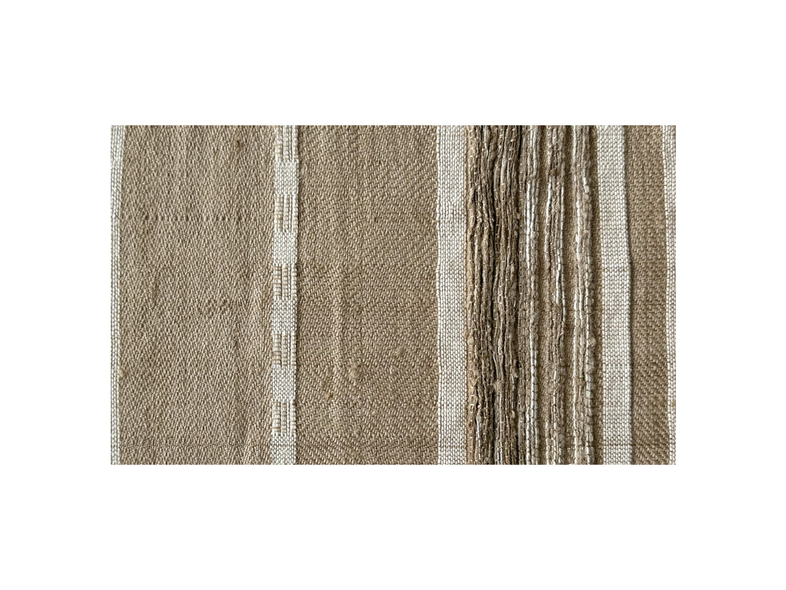
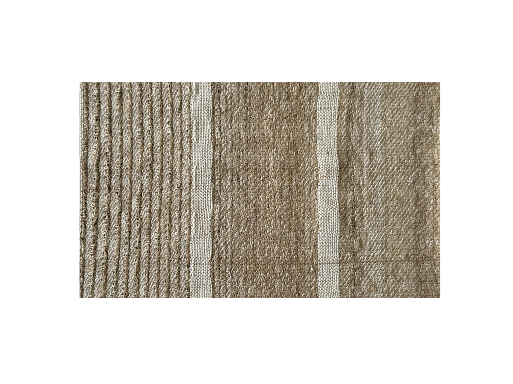
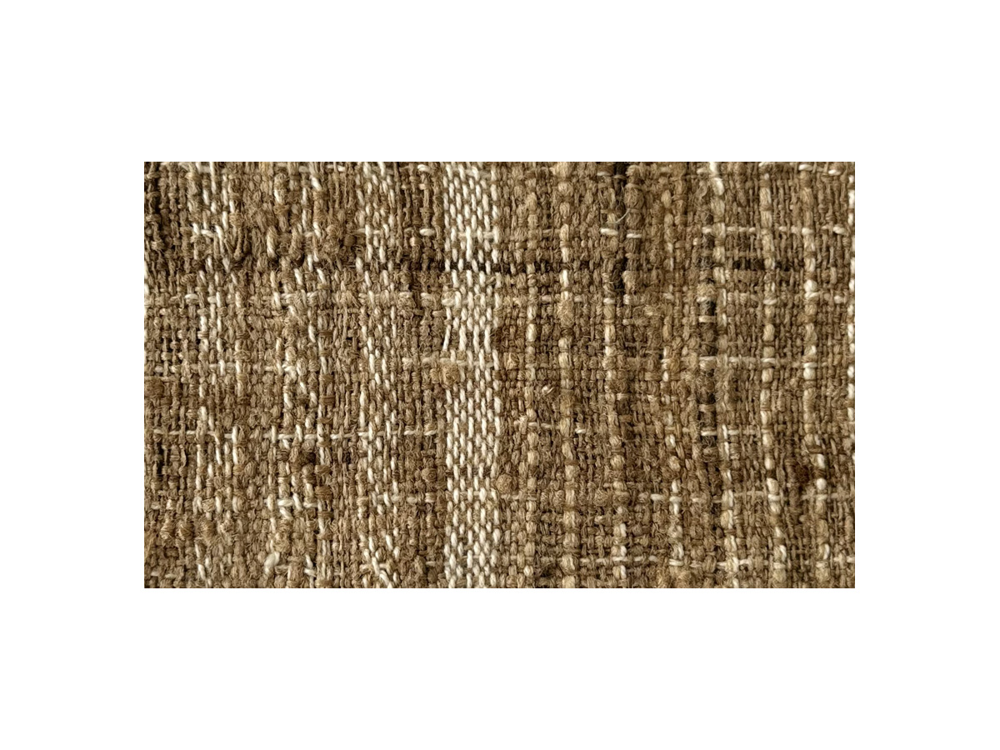
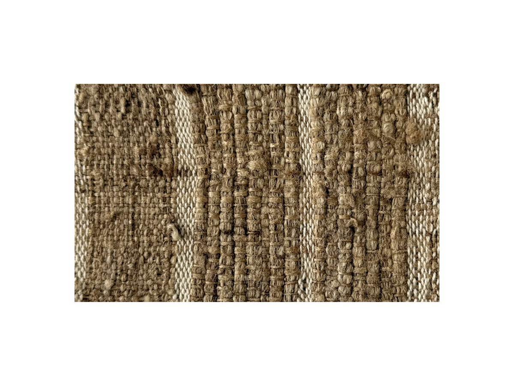
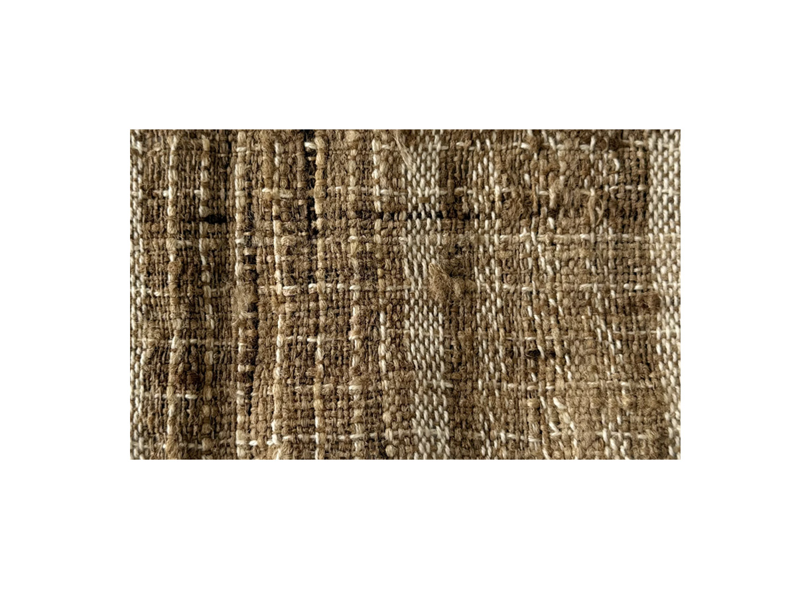
Brief
The brief was to highlight the natural qualities of Tussar silk and arrive at a product range by the end of the course. This was a group project where collaboration and collective decision making were central to the process.
Technique
The technique we carried forward was the dobby weave concept with a thoughtful twist — we introduced a gradual blend of gindle cotton yarn alongside Tussar, slowly transitioning from pure Tussar to cotton yarns. Since the gindle yarn itself lends a textured, busy quality to the fabric, we deliberately chose a very simple pattern for the garment — one that works with the natural character of the fabric rather than competing with it, allowing the flowing quality of the weave to take center stage. The collection was also designed using a zero waste pattern, ensuring that every part of the handwoven Tussar fabric was utilised without any wastage.
Pattern
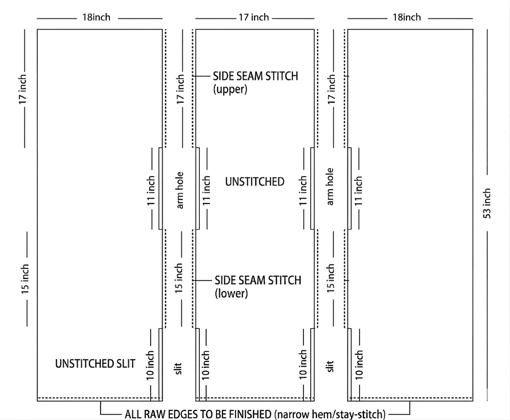
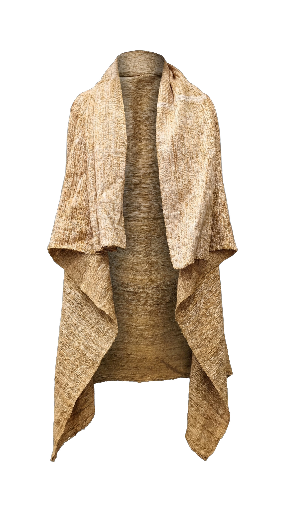
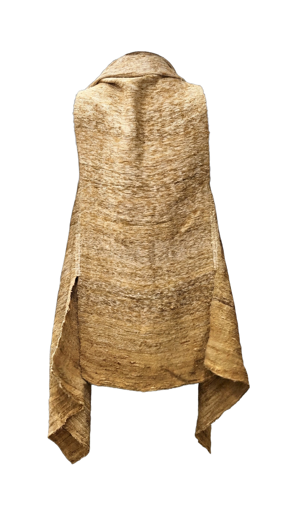


Reflection
This was a rewarding group project that deepened our understanding of collaborative design. Our biggest challenge was aligning the group on the pattern selection and the gradation effect — communicating a concept that was quite technical and ensuring every member was on the same page required patience and clarity. Navigating differing ideas within the group taught us the importance of open communication and creative compromise. Despite these challenges we are most proud of the fact that we successfully completed the entire project within the given timeline, delivering a cohesive and well executed outcome without losing sight of our original vision.